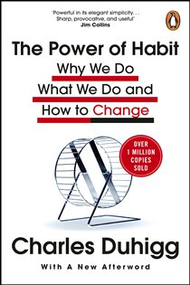

Library › Self-Improvement
The Power of Habit — Summary & Key Lessons

Why we do what we do in life and business — the science of the habit loop and the golden rule of change.
📖 OPEN THE FULL INTERACTIVE BREAKDOWN →🌐 Read it in Hindi, Hinglish, Gujarati, Tamil & 22 more languages — free, with audio.
💡 The Big Idea
Duhigg, a Pulitzer-winning NYT reporter, tours the science of habit at three scales. Individuals: 40%+ of daily actions are habits, not decisions — loops of cue → routine → reward carved into the basal ganglia, driven by craving. The Golden Rule of change: keep the old cue and reward, replace only the routine (it's how AA, the NFL's best coaches, and successful dieters actually work). Organizations: companies run on institutional habits; 'keystone habits' (like worker safety at Alcoa) start chain reactions that transform everything. Societies: movements launch from the strong ties of friendship and the weak ties of community pressure. Habits aren't destiny — but they never truly disappear; they wait. Belief is the ingredient that makes change stick through crises.
🧠 The 6 Key Lessons
Lesson 1: The Habit Loop: Cue, Routine, Reward, Craving
Chapters 1–2: The Habit Loop / The Craving Brain
Habits live in the basal ganglia — so deep that patients with destroyed memory (like Eugene Pauly, 'E.P.') can still learn new routines they can't consciously remember. The loop: a CUE (trigger) fires a ROUTINE (behavior) to earn a REWARD (payoff). The brain 'chunks' the sequence and stops fully participating — which is why you arrive home with no memory of driving. The engine that powers it all is CRAVING: habits only become automatic when the brain begins ANTICIPATING the reward at the moment of the cue (dopamine spikes before the payoff, not after). This is why habits never truly die — the neural pattern waits for its cue forever — and why creating a craving is the secret of every product that ever became a ritual.
📖 Example: Claude Hopkins made Pepsodent the first blockbuster toothpaste by inventing a craving: he tied the cue (tongue-feel of film on teeth) to a reward (the tingling clean sensation — actually just mint oils and citric acid, cosmetic and irrelevant to cleaning).… Read the full example →
⚡ Do this: Pick one habit you want to build and design all four parts: obvious cue, easy routine, genuine reward — and amplify the craving by savoring the reward deliberately for the first two weeks.
Lesson 2: The Golden Rule: Swap the Routine
Chapter 3: The Golden Rule of Habit Change
You cannot extinguish a habit — the loop is physically wired. But you can OVERWRITE the middle: keep the same cue and the same reward, and insert a new routine between them. This is the actual mechanism inside most successful change programs: identify what the old routine was really delivering (stress relief? social connection? stimulation?), then find a behavior that delivers the same payoff. The critical addendum discovered in relapse studies: for change to survive real stress, the new loop needs BELIEF — the conviction that change is possible, most reliably borrowed from a group. 'The evidence is clear: if you want to change a habit, you must find an alternative routine, and your odds of success go up dramatically when you commit to changing as part of a group.'
📖 Example: AA works — despite zero medical design — because it's Golden Rule machinery: same cues (stress, evening hours, emotional pain), same rewards (relief, companionship, escape), new routine (meetings, sponsor calls, the steps instead of the bar). And Tony Dungy… Read the full example →
⚡ Do this: Diagnose one bad habit like a mechanic: for three days, when the urge hits, note the time, place, feeling, and what reward the routine actually delivers. Then prescribe a replacement routine for the same cue-reward pair — and recruit one ally who's changing too.
Lesson 3: Keystone Habits: The Small Wins That Change Everything
Chapter 4: Keystone Habits, or the Ballad of Paul O'Neill
Some habits matter more than others: KEYSTONE HABITS start chain reactions — changing them rewires unrelated patterns. Exercise is the classic personal keystone (people who start training also eat better, sleep better, spend less, procrastinate less — none of it planned); family dinners and made beds correlate with a suite of other disciplines. The mechanics: keystone habits create SMALL WINS (proof that change is possible, which fuels bigger attempts), build structures that host other habits, and establish cultures where new values become self-reinforcing. In organizations, one obsessively-enforced priority can reorganize everything around it — the trick is choosing the keystone whose ripples reach furthest.
📖 Example: Paul O'Neill took over Alcoa in 1987 and told Wall Street his only priority was WORKER SAFETY — investors fled the 'hippie commune' speech; one broker told clients to sell immediately. But safety was a keystone: to eliminate injuries, every process had to be… Read the full example →
⚡ Do this: Choose ONE keystone: exercise 3x/week, a nightly planning ritual, or family dinner. Protect only that for 60 days and journal the ripple effects — you're not building a habit, you're installing a culture.
Lesson 4: Willpower Is a Muscle — and a Plan
Chapter 5: Starbucks and the Habit of Success
Willpower is the single most important keystone habit for individual success — and it behaves like a muscle: it fatigues with use (radish-resisting students quit puzzles in half the time of cookie-eaters), and it STRENGTHENS with training (money-management or study programs improve unrelated discipline: diets, smoking, dishes). Two force multipliers: willpower becomes automatic when you pre-decide responses to predictable crisis points — writing implementation plans for the exact moments discipline usually fails — and it collapses when people feel ordered around versus feeling agency (cashiers commanded to smile burn out; those given authorship of their scripts endure). Institutions can teach it: that's the real product of elite training programs.
📖 Example: Starbucks — which trains more entry-level workers than almost any institution in America — discovered lattes were the easy part; willpower at rush hour was the product. Its solution: the LATTE method and dozens of scripted routines where employees rehearse,… Read the full example →
⚡ Do this: Find your predictable failure point (3 pm snacks, angry emails, the snooze button) and write the exact if-then script for it: 'When X happens, I will do Y.' Rehearse it twice; deploy it this week. Add one small daily discipline as willpower training.
Lesson 5: How Organizations and Movements Run on Habit
Chapters 6–8: The Power of a Crisis / Target / Saddleback and Montgomery
Organizations don't decide most of what they do — they follow institutional habits: routines and truces that balance rival departments' ambitions. These truces keep peace but can incubate disaster when no one owns safety-critical wholes; crises then become precious — the rare moments when habits liquefy and leaders can redesign them (good leaders prolong the useful emergency). Companies also read and exploit YOUR habits: retailers identify life disruptions — above all pregnancy and moving — because that's when shopping loops break and can be re-formed; the craft is camouflaging the new suggestion among the familiar. Movements, finally, are habit at social scale: they START through strong ties (a friend is arrested), SPREAD through weak ties and peer pressure (the community's social habits make sitting out costly), and LAST when participants gain new identities and self-propelling habits.
📖 Example: Target's statisticians could assign shoppers a 'pregnancy prediction' score from ~25 products (unscented lotion, magnesium supplements, big cotton balls) — famously outing a teen's pregnancy to her father via coupons. The fix wasn't stopping; it was… Read the full example →
⚡ Do this: At work: map one dysfunctional truce ('we don't question X department') and raise it while any current mini-crisis keeps things fluid. Personally: you're most reprogrammable during disruptions — moving, new job, new baby — so schedule your next habit overhaul to coincide with one.
Lesson 6: The Golden Rule of Habit Change: Keep the Cue, Change the Routine
Part 2: The Anatomy
Duhigg's most actionable finding: you rarely eliminate a habit — you replace it. The 'golden rule' is that habits are loops of cue → routine → reward, and the cue and reward are almost always worth keeping; only the routine needs to change. The smoker who identifies the cue (stress) and the reward (a break, calm) can swap the cigarette for a walk or deep breaths — the loop still fires, but the behaviour transforms. The failure mode is trying to kill the loop entirely: willpower alone can't beat a cue your brain still wants. The skill is diagnosis: isolate the true cue and reward, then engineer the replacement routine.
📖 Example: Duhigg describes Alcoholics Anonymous as the world's largest habit-change lab: it keeps the cue (craving) and the reward (relief, community) but replaces the routine (drinking) with meetings and the 12 steps. The loop survives; the behaviour changes. Read the full example →
⚡ Do this: Pick one habit you want to change. Write its cue, routine and reward — then design one replacement routine that keeps the cue and reward, and try it this week.
✅ 5-Step Action Plan
- Reverse-engineer one bad habit: log cue, routine, and true reward for 3 days.
- Apply the Golden Rule: same cue, same reward, new routine — with an ally.
- Install one keystone habit and track its ripples for 60 days.
- Script if-then plans for your two most predictable willpower failures.
- Time your next big change to a natural life disruption.
⚠️ When This Doesn't Work
Habits are morally neutral — the same loop that builds your morning run builds a company's fraud. Wells Fargo's culture of aggressive sales targets created a powerful habit loop: cue (pressure), routine (open fake accounts), reward (bonus). It was one of the most 'successful' habit systems in banking history and it destroyed the bank's trust. Before you build a habit system, ask what the reward is training. A well-designed loop pointed at the wrong target is a well-designed disaster.
💀 The Graveyard Proves It
🏛️ Wells Fargo — 3.5 Million Fake Accounts, Opened by Its Own Staff. Burn: $3B+ fines; CEO's career; the brand. Read the full case study →
💬 Best Quotes from The Power of Habit
- “Change might not be fast and it isn't always easy. But with time and effort, almost any habit can be reshaped.”
- “Small wins are a steady application of a small advantage.”
- “Willpower isn't just a skill. It's a muscle.”
Interactive version: mark lessons as read, listen in your language, share quote cards.